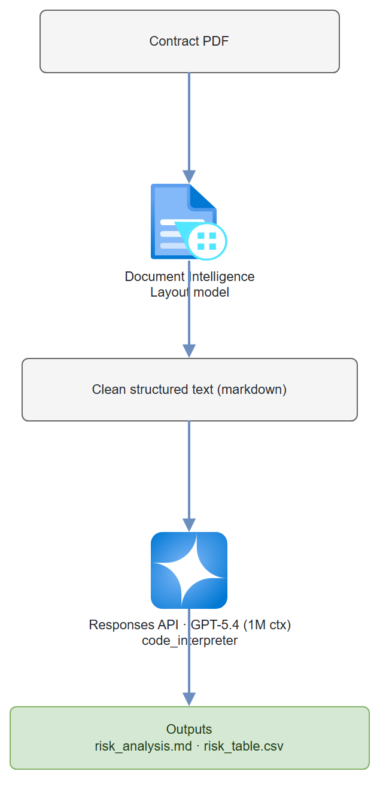

Build it yourself. This project is part of the AI Projects for Cloud Solution Architects portfolio. Full source, code, and the latest updates live in the csa-ai-projects repo on GitHub.
Extract every clause from a contract PDF, run GPT-5.4's 1M-token context window over the whole thing, and get back a risk-scored table with specific clause annotations.
What You're Building
A Python pipeline that uses Azure AI Document Intelligence to extract clean text from a contract PDF, then sends the entire document to GPT-5.4 through the Responses API (which fits contracts up to ~700 pages in a single context window). The model uses the code_interpreter tool to generate a risk scoring table. Output: a markdown risk summary plus a downloadable CSV of clause-level risk scores.
Prerequisites
- A Microsoft Foundry / Azure AI Services resource with a
gpt-5.4deployment:bash az cognitiveservices account deployment create --name <res> --resource-group <rg> \ --deployment-name gpt-5.4 --model-name gpt-5.4 --model-version 2026-03-05 \ --model-format OpenAI --sku-name GlobalStandard --sku-capacity 10 - Azure AI Document Intelligence resource (Step 1 creates one).
- Azure CLI logged in with Cognitive Services OpenAI Contributor on the AI Services resource and Cognitive Services User on the Document Intelligence resource. This demo uses Entra ID auth, not keys.
AZURE_OPENAI_ENDPOINTandDOC_INTEL_ENDPOINTset in.env.- Python 3.11+
- A contract PDF (NDA, SaaS agreement, or employment contract)
pip install "openai>=1.30.0" azure-ai-documentintelligence azure-identity python-dotenv
Architecture

Step-by-Step Build
Step 1 — Create a Document Intelligence resource
az cognitiveservices account create \
--name contract-doc-intel \
--resource-group $RG \
--kind FormRecognizer \
--sku S0 \
--location eastus2 \
--custom-domain contract-doc-intel \
--yes
# Endpoint (Entra ID auth — no keys; many tenants disable key/local auth by policy)
DOC_INTEL_ENDPOINT=$(az cognitiveservices account show \
--name contract-doc-intel --resource-group $RG \
--query properties.endpoint -o tsv)
# Grant yourself data-plane access via Entra ID
az role assignment create \
--assignee $(az ad signed-in-user show --query id -o tsv) \
--role "Cognitive Services User" \
--scope $(az cognitiveservices account show --name contract-doc-intel --resource-group $RG --query id -o tsv)
Step 2 — Extract text from contract PDF
import os
import pathlib
from dotenv import load_dotenv
from azure.ai.documentintelligence import DocumentIntelligenceClient
from azure.identity import DefaultAzureCredential
load_dotenv()
DOC_INTEL_ENDPOINT = os.environ["DOC_INTEL_ENDPOINT"]
# Entra ID auth (az login locally / managed identity) — no keys
doc_client = DocumentIntelligenceClient(
endpoint=DOC_INTEL_ENDPOINT,
credential=DefaultAzureCredential()
)
def extract_contract_text(pdf_path: str) -> str:
"""Extract text from PDF using Document Intelligence Layout model."""
with open(pdf_path, "rb") as f:
poller = doc_client.begin_analyze_document(
model_id="prebuilt-layout",
body=f,
content_type="application/pdf",
output_content_format="markdown" # Get markdown with table structure
)
result = poller.result()
# Concatenate all page content
full_text = result.content
print(f"Extracted {len(full_text)} characters from {len(result.pages)} pages")
return full_text
Why Document Intelligence instead of raw PDF parsing? PyPDF2 and pdfplumber struggle with multi-column layouts, headers/footers, and tables (common in legal documents). Document Intelligence's Layout model correctly handles these and outputs clean markdown — which the model processes much better.
Step 3 — Set up the model client and risk instructions
There's no separate agent to register — the Responses API takes the instructions and the code_interpreter tool on each call.
from azure.identity import DefaultAzureCredential, get_bearer_token_provider
from openai import AzureOpenAI
client = AzureOpenAI(
azure_endpoint=os.environ["AZURE_OPENAI_ENDPOINT"],
azure_ad_token_provider=get_bearer_token_provider(
DefaultAzureCredential(), "https://cognitiveservices.azure.com/.default"),
api_version="2025-04-01-preview",
)
MODEL = "gpt-5.4" # 1M context — fits even long contracts
CODE_INTERPRETER = [{"type": "code_interpreter", "container": {"type": "auto"}}]
INSTRUCTIONS = """You are an expert contract attorney and risk analyst.
When given a contract, you will:
1. Identify and extract all clauses (give each a short name and clause number)
2. Score each clause for risk on a scale of 1-5:
- 1 = Standard, no concern
- 2 = Slightly unusual, monitor
- 3 = Moderate risk, recommend review
- 4 = High risk, recommend negotiation
- 5 = Severe risk, recommend rejection or legal counsel
3. Flag specific risky language with exact quotes
4. Use the python (code_interpreter) tool to generate a risk scoring table and
save it as a CSV file named risk_table.csv
Risk categories to check:
- Liability caps and indemnification (especially uncapped liability)
- IP ownership (look for "work for hire" and IP assignment clauses)
- Termination rights (especially unilateral termination without cause)
- Data privacy and security obligations
- Dispute resolution (binding arbitration, jurisdiction)
- Non-compete and non-solicitation scope
- Auto-renewal with short cancellation windows
Output format in your final message:
1. Executive summary (3-5 sentences)
2. Risk table (as a markdown table)
3. High-risk clause details (risk score 4-5 with exact quotes)
4. Recommended actions
"""
Step 4 — Run the analysis
def analyze_contract(contract_text: str, contract_name: str) -> tuple[str, str | None]:
"""Analyze a contract; returns (analysis_markdown, code_interpreter_container_id)."""
print("Running analysis (this takes 30-90 seconds for large contracts)...")
# GPT-5.4 has 1M context — even a 300-page contract is ~150K tokens.
# The Responses API runs the code_interpreter tool loop for us; there are
# no threads/runs and no separate agent registration.
response = client.responses.create(
model=MODEL,
instructions=INSTRUCTIONS,
input=(
f"Please analyze this contract: **{contract_name}**\n\n"
"Generate a complete risk assessment with a clause-by-clause risk table.\n\n"
f"--- CONTRACT TEXT ---\n\n{contract_text}"
),
tools=CODE_INTERPRETER,
)
# The tool runs in a container that holds any files it created (risk_table.csv)
container_id = None
for item in response.output:
if getattr(item, "type", None) == "code_interpreter_call":
container_id = getattr(item, "container_id", None)
return response.output_text, container_id
Step 5 — Download Code Interpreter outputs
def download_container_files(container_id: str | None, output_dir: str) -> list[str]:
"""Download any files the code_interpreter tool created in its container."""
if not container_id:
return []
pathlib.Path(output_dir).mkdir(parents=True, exist_ok=True)
paths = []
for f in client.containers.files.list(container_id=container_id).data:
if getattr(f, "source", None) != "assistant": # skip the input file(s)
continue
name = (getattr(f, "path", None) or f.id).split("/")[-1]
content = client.containers.files.content.retrieve(f.id, container_id=container_id)
out_path = f"{output_dir}/{name}"
with open(out_path, "wb") as fh:
fh.write(content.read())
paths.append(out_path)
print(f"Downloaded: {out_path}")
return paths
Step 6 — Wire it all together
import pathlib
from datetime import datetime
def main(pdf_path: str):
contract_name = pathlib.Path(pdf_path).stem
print("Step 1: Extracting contract text...")
contract_text = extract_contract_text(pdf_path)
print("Step 2: Analyzing contract...")
analysis, container_id = analyze_contract(contract_text, contract_name)
print("Step 3: Saving results...")
ts = datetime.now().strftime("%Y%m%d_%H%M%S")
output_dir = f"outputs/{contract_name}_{ts}"
pathlib.Path(output_dir).mkdir(parents=True, exist_ok=True)
# Save main analysis (UTF-8 — legal text often has curly quotes/accents)
analysis_path = f"{output_dir}/risk_analysis.md"
with open(analysis_path, "w", encoding="utf-8") as f:
f.write(f"# Contract Risk Analysis: {contract_name}\n\n")
f.write(analysis)
print(f"Saved analysis: {analysis_path}")
# Download the CSV (and any other files) the tool generated
download_container_files(container_id, output_dir)
print(f"\nAnalysis complete. Results in: {output_dir}/")
if __name__ == "__main__":
import sys
main(sys.argv[1] if len(sys.argv) > 1 else "contract.pdf")
python contract_analyzer.py my-vendor-agreement.pdf
Test It
Use any contract PDF you have (an NDA, SaaS agreement, or employment contract works well):
python contract_analyzer.py sample-contract.pdf
Expected output structure:
# Contract Risk Analysis: sample-contract
## Executive Summary
This SaaS agreement presents moderate overall risk. Key concerns include an
uncapped indemnification clause in Section 8.2 and a 90-day auto-renewal window
with only 15-day cancellation notice required...
## Risk Table
| Clause | Section | Risk Score | Category | Notes |
|--------|---------|-----------|----------|-------|
| Indemnification | 8.2 | 4/5 | Liability | Uncapped mutual indemnification |
| Auto-renewal | 12.1 | 3/5 | Termination | 15-day cancellation window |
| IP Assignment | 6.1 | 2/5 | IP | Standard work-for-hire, expected |
Common Mistakes
- Reaching for the old Assistants
agentsAPI.azure-ai-projects2.x removed the threads/runs Assistants surface —AIProjectClienthas no.agents, andCodeInterpreterTool/PromptAgentDefinition/MessageRolearen't importable. Use theAzureOpenAIResponses API withtools=[{"type": "code_interpreter", ...}], as shown above. - Document Intelligence returns empty text. This happens with password-protected PDFs. Remove password protection before processing.
- GPT-5.4 token limit for very large contracts. 1M tokens ≈ 750K words. Most contracts fit easily, but if you hit limits, split by section headers returned by Document Intelligence.
- Code Interpreter ran but you can't find the CSV. The file lives in the tool's container, not the message. List it with
client.containers.files.list(container_id=...)(filtersource == "assistant") and download viaclient.containers.files.content.retrieve(...), as in Step 5.
Extend It
- Clause comparison: Upload two versions of a contract and have the agent diff them, highlighting what the other party changed and whether those changes increase risk.
- Precedent library: Store analyzed contracts in Cosmos DB. When a new contract comes in, have the agent compare it to similar contracts from your precedent library to identify unusual clauses.
- Automated redlines: Have the agent generate suggested alternative clause language for all risk-scored 4+ clauses. Export as a Word document with tracked changes using
python-docx.